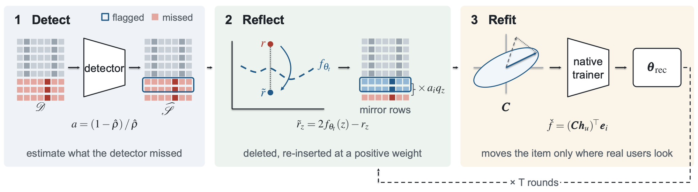
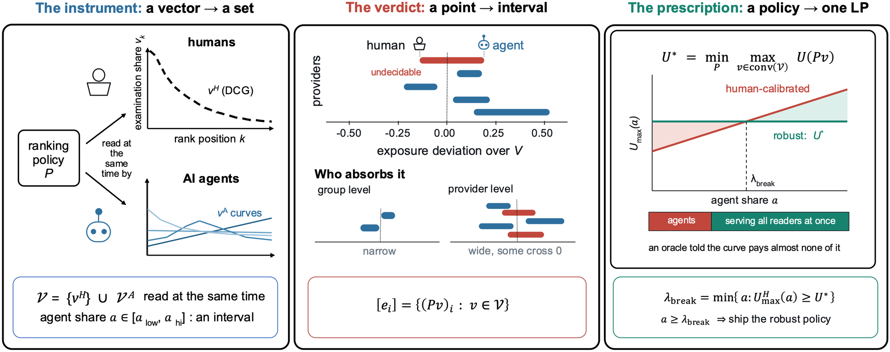
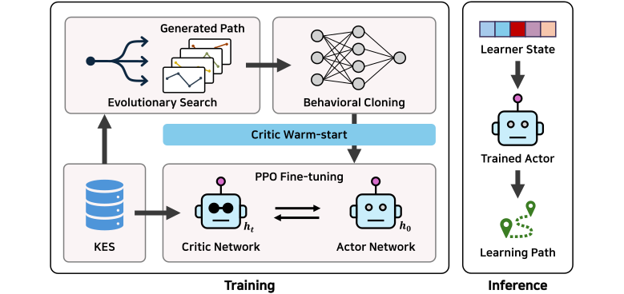
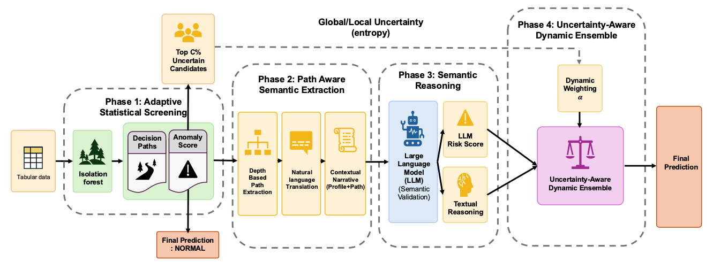
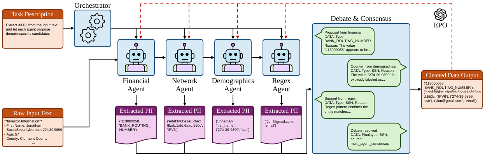
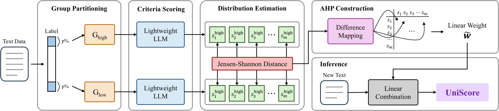

Geonwoo Bang
Building trustworthy recommenders and LLM agents.
I am an MSc student in Data Science at ETH Zürich. I graduated summa cum laude from Sungkyunkwan University with a triple degree in Computer Science & Engineering, Statistics, and Computer Education. My research spans recommender systems, fairness and robustness, explainable AI, and LLM-based agents.
Education
MSc in Data Science, ETH Zürich
Triple Degree Program · Summa Cum Laude, Sungkyunkwan University
- B.S. in Computer Science and Engineering — 4.44/4.5
- B.Econ. in Statistics — 4.5/4.5
- B.S. in Computer Education — 4.21/4.5
Research plan
Group-level personas
Most LLM personas describe one imagined person, with a name, an age and a backstory. That works for a single conversation, but it does not scale to experiments that need thousands of users whose tastes vary the way real populations do. I want to build personas for groups, describing how preferences and behavior are spread across a group instead of one typical member, so they can be used in large-scale experiments.
LLM simulation for recommendation
On top of group-level personas, I want to use LLM simulation to evaluate many kinds of recommendation tasks without people in the loop. A simulated evaluation is only worth running if it reaches the same conclusions real users would, so for each task I want to measure that agreement before trusting the simulation.
Motion generation and control
I worked on character animation in a graphics lab, from motion matching with capture data to compressing motion with diffusion models and reinforcement learning, and more recently on robot controllers that an LLM writes weight by weight. I want to keep working on motion that looks natural and responds to control, for animated characters and for robots alike.
Personalized LLMs
Most LLMs treat every user the same until the user restates their preferences in the prompt. I want models that learn what a person cares about from ordinary use and keep that knowledge in a form the person can read and correct. Preferences also drift, so the model should notice when its picture of someone has gone stale.
News
- Two papers accepted to WSDM 2027.
- Started my MSc in Data Science at ETH Zürich.
- One paper accepted to CIKM 2026.
- Graduated summa cum laude from Sungkyunkwan University.
Publications
Propensity-Weighted Reflection for Recovering Poisoned Recommenders under Partial Identification

Recommender systems are vulnerable to data poisoning, while defenses act primarily before or during training. We study post-training recovery when a detector flags only some injected fake profiles. Retraining on the partially cleaned data leaves most of the attack in place. The recovery target uses a propensity correction that subtracts each caught fake in proportion to the detection rate and accounts in expectation for poison missed by the detector. The resulting negative weights can make the training objective indefinite and the solve unstable. We propose Mirror, which deletes each caught interaction and re-inserts a reflection based on the model’s prediction with positive weight. This realizes the correction as reflected training data, leaves the model’s native trainer unchanged, and avoids the indefinite signed formulation. The construction requires a loss with an invertible label map and is instantiated for matrix factorization, graph, and sequential recommenders. For squared error, each round provably reduces the debiased objective. Mirror estimates the missed rate from the attack footprint and each flag’s reliability from the detector posterior, so the same correction handles both detector errors. Against a real detector not developed by the authors and an attacker that obfuscates its profiles, Mirror outperforms retraining in all three model families, with the largest advantage under partial detection, while preserving recommendation quality for genuine users. Controlled sweeps of the identification rate isolate the mechanism: Mirror removes the attack where retraining does not, across eleven datasets and three model families.
Whose Fairness? Auditing Exposure Fairness When AI Agents Read Rankings

Exposure fairness is computed rather than observed. Every metric weights ranks through an examination curve, conventionally treated as one known measurement instrument. AI agents break that premise. In a bias-controlled study of eight LLMs across six families, agent readers exhibit distinct positional curves, including mild primacy, near-flat behavior, mid-list humps, and reversed primacy. None can stand in for a single human model. The difficulty is not one uncertain curve but several realized at once, so the instrument is set-valued and exposure fairness is only partially identified. Standard existence-style auditing then fails: a ranking can be certified by some plausible curve while every realized reader is treated unfairly. On one workload, calibrating to the human curve leaves the worst-served agent reader worse off than no intervention at all. We characterize this failure, show that the exact worst case and certificate expiry are computable from the set, and derive a min–max robust ranking policy as one linear program. Across four domains, an oracle told the realized curve still pays about a quarter of the fairness premium, the rest being the price of serving all readers at once, while robustness costs at most 0.005 NDCG beyond human-calibrated fairness. The residual ambiguity falls on individual providers. For 27–73% of the top-15, even the direction of exposure harm is unidentified, yet a group-level audit averages that disagreement away. On LastFM, changing the aggregation level produces a thirty-fold gap.
EVOL: Simulator-Guided Evolutionary Expert Synthesis for Deployment-Free Learning Path Recommendation

Reinforcement learning (RL) for learning path recommendation (LPR) faces two coupled obstacles. First, the policy must commit to a sequence of L concepts without intermediate feedback, producing a combinatorial search space that grows super-exponentially with L and provides reward only at the final step. Second, expert learning paths would be the natural cure for sparse-reward RL, but they do not exist in educational data, because student logs record what learners did, not what they should have done. We address both obstacles by importing a recipe from simulator-based demonstration learning in robotics: the knowledge tracing simulator is used both to synthesize per-learner expert demonstrations through evolutionary search and to train a deployment-free policy that distills these demonstrations into a feed-forward learner. Our framework, EVOL, instantiates this pipeline with an asymmetric actor-critic where the actor commits to deployment-realistic blind planning while the critic exploits the privileged simulator state during training. Across three datasets (ASSIST15, Junyi, and EdNet; 39-189 concepts) and path lengths L = 5, 10, and 20, EVOL surpasses 8 baselines spanning heuristic, sequential, RL, graph-enhanced RL, and LLM-enhanced methods. We further compare three imitation strategies (BC, AWR, and DAPG) and show that final performance is governed by the quality of evolutionary experts rather than by the particular imitation objective.
ReForest: Interpretability Meets Reasoning in Isolation Forest

Statistical anomaly detection methods like Isolation Forest are efficient but suffer from a critical semantic gap. They identify numerical rarities but fail to understand the contextual meaning of data, often missing subtle, context-dependent anomalies. Conversely, Large Language Models possess strong semantic reasoning capabilities but are prohibitively expensive and slow for large-scale deployment. To bridge this gap, we propose ReForest, a novel framework that synergizes the statistical efficiency of Isolation Forest with the reasoning power of LLMs. ReForest transforms the latent decision paths of Isolation Forest into natural-language explanations, enabling an LLM to refine anomaly detection through an uncertainty-aware dynamic ensemble. This approach allows the model to adaptively weigh statistical and semantic signals based on uncertainty-driven instance-level confidence. Extensive experiments on four real-world datasets (Healthcare, Finance) demonstrate that ReForest significantly outperforms baselines, achieving an average 21% improvement in Recall and a 10% gain in F1-score. Our framework not only improves detection performance but also enhances model transparency by grounding semantic narratives in statistical evidence, providing interpretable rationales essential for high-stakes decision-making.
Adaptive PII Detection via Evolutionary Orchestration and Multi-Agent Debate

The definition of Personally Identifiable Information (PII) is fluid across legal jurisdictions and domain-specific schemas. Consequently, static Named Entity Recognition (NER) models often become brittle on heterogeneous datasets, while monolithic prompts suffer from attention degradation and hallucination when extracting extensive entity taxonomies. In this work, we propose a novel framework that reframes PII detection as a dynamic alignment problem rather than a static classification task. Our system features a Schema-Agnostic Orchestrator that dynamically decomposes target labels into semantic clusters, coupled with an Evolutionary Prompt Optimizer that automates the refinement of agent instructions using k-shot feedback. Furthermore, we integrate an uncertainty-aware debate protocol to resolve inter-agent conflicts through deliberative reasoning. Experiments on Nemotron-PII, AI4Privacy benchmarks (pii-masking-200k and open-pii-masking-500k) demonstrate that our adaptive system achieves competitive or superior performance against larger static baselines despite its smaller parameter footprint, establishing a new state-of-the-art in zero-shot PII adaptation.
Transforming User-Defined Criteria into Explainable Indicators with an Integrated LLM-AHP System

Evaluating complex texts across domains requires converting user defined criteria into quantitative, explainable indicators, which is a persistent challenge in search and recommendation systems. Single prompt LLM evaluations suffer from complexity and latency issues, while criterion specific decomposition approaches rely on naive averaging or opaque black-box aggregation methods. We present an interpretable aggregation framework combining LLM scoring with the Analytic Hierarchy Process. Our method generates criterion specific scores via LLM as judge, measures discriminative power using Jensen Shannon distance, and derives statistically grounded weights through AHP pairwise comparison matrices. Experiments on Amazon review quality assessment and depression related text scoring demonstrate that our approach achieves high explainability and operational efficiency while maintaining comparable predictive power, making it suitable for real time latency sensitive web services.


Blog
- Weight-Space Programming from Zero for Robot Control
No reward, only a goal sentence: over 100 generations GPT-6 Astra wrote a simulated Go1’s walking controller as plain numbers, starting from all zeros. Its velocity error on a hidden test fell from 0.797 to about 0.22 m/s.
Experience
Research
Research Collaborator, SW Lab, Sungkyunkwan University
- Researched recommender system unlearning and sequential recommendation for education
- Developed PII detection methods to identify and protect sensitive information in data
Research Assistant, Motion AI Lab, Sungkyunkwan University
- Implemented a real-time responsive motion matching system using motion capture data
- Developed keyframe extraction and motion compression using diffusion and reinforcement learning
Research Assistant, LAMDA Lab, Sungkyunkwan University
- Core team member in securing a $5M national R&D grant on AI-based digital therapeutics
- Developed a generative AI NPC framework and implemented intelligent character interactions
Teaching
Information and Communication, Sunrin High School
AI Basics & Uses, Sungkyunkwan University
Thesis Writing in Social Sciences using Python, Sungkyunkwan University
AI Basics & Uses, Sungkyunkwan University
AI Basics & Uses, Sungkyunkwan University
Service
Communications & IT Specialist (PO2), Republic of Korea Navy 2nd Fleet, Incheon
- Operated military-grade satellite, microwave, and radio communication systems
- Deployed twice for North Korean drone threat response, ensuring flawless communication
Awards and scholarships
Awards
- Gold Prize – SKKU AI Hackathon
- Grand Prize – SKKU AI Hackathon
- Special Prize – K-PaaS Service Development Contest, MSIT, Korea
- Third Prize – MAFA Public Data Utilization Startup Contest, MAFA, Korea
- Excellence Prize – Data Safety Zone Competition, MSIT, Korea
Scholarships
- Academic Excellence Scholarship (Top ≤ 4%), SKKU
- Challenge Semester TA Scholarship, SKKU
- University Innovation Scholarship, SKKU